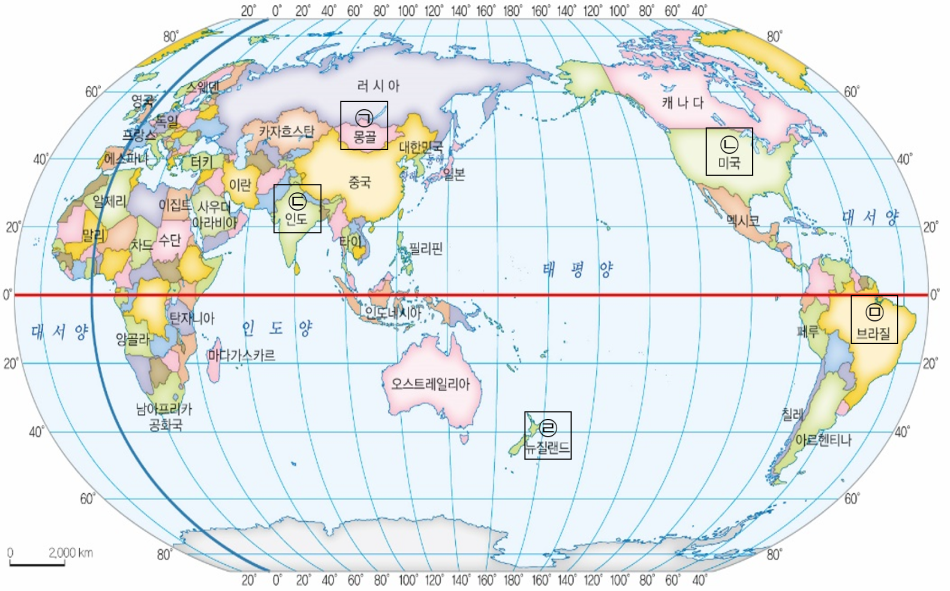

1번
다음 조사 보고서의 내용에 해당하는 나라를 아래 지도에서 고르세요.
<OO나라 조사 보고서>
개요
조사 내용
OO나라의 자연환경과 사람들의 의식주 생활 모습
자연환경
- 넓은 초원이 발달하였다.
- 겨울이 길고 비가 적게 내려 농사짓기가 어렵다.
생활모습
- 유목 생활을 하는 사람들이 추운 겨울에 말을 타고 이동할 때 손이 따뜻해지도록 긴 소매의 옷을 주로 입는다.
- 가축을 기르며 물과 풀을 찾아 이동하기 때문에 분해와 조립이 쉬운 이동식 천막에서 생활한다.
ㄱ
ㄴ
ㄷ
ㄹ
ㅁ
